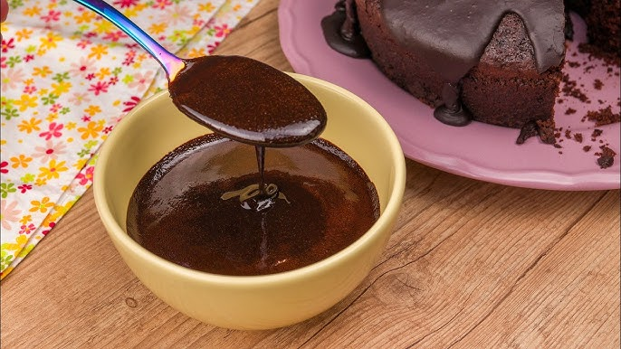

Receita de Bolo Facil!!
Bolo de cenoura facil e super fofinho

Fonte principal:www.tudogostoso.com™
Receita massa: serve 4 pessoas
2 xícara de farinha de trigo
4 ovos
3 cenouras medias ou 300g
Uma xícara de açucar
1/2 xícara de oléo
Uma colher de sopa rasa de Fermento em pó
Agora para a cobertura
Ao fogo coloque:
2 caixinhas de leite condensado
5 colheres de nescau em pó
Uma colher cheia de manteiga
Modo de Preparo
Ao liquidificador leve os ovos,cenoura,oleo e o açucar
Bata por 5 minutos sem parar
Após bater leve a mistura para um recipiente e misture a farinha aos poucos
Unte a forma e despeje a mistura
Leve ao forno a 180º por 40 min ou até assar completamente
Despeje a cobertura e Pronto!!! Seu bolo está pronto
Créditos da receita
Dona benta™
A real goat das Receitas n tem jeito😎😎😎😎😎😎
como ela mesmo falou:
eu era a mais pika da minha epoca